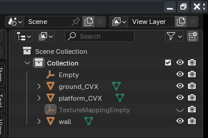

Module: locations_tools
Documentation last edited: October 23, 2025 at 14:33 UTC
Description
So let's assume that you used Hammer Editor once and thought it is kinda shit. So you decide that it is a brilliant idea to turn Blender into your level design tool. So you make this entire module. Enough time passes and your sanity fades away just like the sheer optimism you had when you thought Hammer Editor sucked. In the end, you managed to make something that sucks harder. Welcome to "Locations Tools", ladies and gentlemen.
This page will be mostly an instruction of using this system rather than coverage of its technical details, just saying.
Location Blockout

LocationBlockout
is a node that is giving you a possibility to design your entire level in Blender alone. It is useful for huge unique pieces of geometry. This is the basis of your game level. This kind of geometry may not be so detailed, but it is forming the level's layout, therefore it is called a "blockout." Its detalization may go far beyond just grayboxing, but hey, I just needed to pick some funny name. This node accepts your blockout's name, reads an exported .glb file at
"res://locations/blockouts/"
and creates
LocationBlockoutMesh
nodes as children of this node. You can tweak
LocationBlockoutMesh
as you wish to achieve the required gameplay needs, they have *a lot* of settings.
Node Name Markings

You can put some tags into your Blender object names to create fast setups of your future nodes (like you can see in the first screenshot).
_CVX
- Forces optimized convex collision on your node.
_NOCOL
- Disables collision.
_PLACE
- Turns this piece into placeholder that can be removed as soon as game runs.
_OCC
- Turns this piece into
Occluder
node.
_ROOMBOX
- Turns this piece into a
Room
for occlusion culling purposes.
_PORTAL
- Turns this piece into a
Portal
for occlusion culling purposes.
_ROOM
- Additionally creates a
Room
node using this meshes' geometry. Unlike
_ROOMBOX
it doesn't remove the mesh fully, making it possible to use the actual room's geometry to be used for occlusion culling.
TODO: IMPLEMENT FAST MODE
_SPEC
- Makes this
LocationBlockoutMesh
visible as a separate node in "fast mode".
Using in Blender
BlenderFastTools plugin has plenty of buttons that you might find very *attractive* when you wanna work with
LocationBlockout
.
-
"Sync Godot Materials"
creates a plenty of Blender materials that can be assigned to your geometry.
- If you assigned collection correctly,
"Export"
button in
"Blockout Export"
category will export your current blockout as .glb to be read in Godot.
That's really it. Simple as that. In Godot, you just press
"Update"
checkbox in your
LocationBlockout
node, after assigning a correct
"Blockout Name"
value.

AssetHelper
Location Prop


While
LocationBlockout
provides you a possibility to make the layout of your location,
LocationProp
allows you to put more detail. Props are repetitive details that can be put wherever you want. You can put those props wherever you want by using the PropKit tool:
Node Name Markings

You can put some tags into your Blender object names to configure your prop more precisely.
_PHYS
- A static convex physics body part.
_OCC
- An occluder.
_PCLIP
- A concave player clip.
_PCLIPCVX
- A convex player clip.
_LOD
- An LOD version of the prop.
_COL.*
[bone_name]
*
- A convex collision part that is parented to a skeleton bone.
_DEBD
- A debris part, dynamic.
_DEBS
- A debris part, static.
_PART
- A prop part (another
LocationProp
node) that is created as a children of this prop.
_GLASS
- An optimized glass part.
Using in Blender

BlenderFastTools plugin has 2 buttons related to
LocationProp
.
-
"Export"
button exports each selected object in Blender as individual .glb files. Nothing too fancy here.
"thing_DEBD"
is saved as
"thing_DEBD.glb"
at
"res://locations/props/exported/"
.
-
"Export Animated"
button allows you to select your armature and mesh (mesh has to be parented to an armature) and then export it as an animated prop.
If you want to know some technical details, just take a look into source code of whatever you need and get shocked. Or not. I don't know, I'm not your daddy.
If you are looking for some extra optimization just take a look at
"location_mesh_combiner"
module documentation.
General Information
Root directories list
assets, docs, src
Nodes
location_dynamic_objects
LocationBlockoutMesh
LocationProps
LocationPhysicsGlobal
LocationPortal
LocationShaderCompileView
LocationProp
LocationPropFileArchive
LocationBlockoutFast
LocationPart
debris_remove
LocationModelTool
LocationBlockout
Classes
Resources
LocationCollisionDict
LocationBlockoutMaterialConfig
LocationPhysicsData
LocationPropConfig
LocationCollisionData
Other Scripts
None